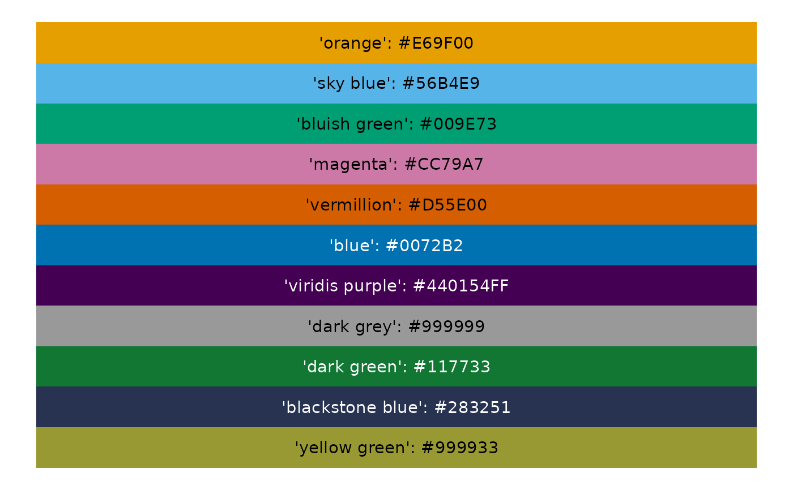

A utils function for loading Qualitative color scale Blackstone Research and Evaluation colors for charts.
Arguments
- add_names
Required, logical, if FALSE returns a vector of hex color codes, if TRUE returns a named vector with color names that can be used to select from.
Value
A vector or named vector of hex colors for Qualitative color scale for Blackstone Research and Evaluation.
Examples
# Full color palette with names:
qualColors(add_names = TRUE)
#> orange sky blue bluish green magenta vermillion
#> "#E69F00" "#56B4E9" "#009E73" "#CC79A7" "#D55E00"
#> blue viridis purple dark grey dark green blackstone blue
#> "#0072B2" "#440154FF" "#999999" "#117733" "#283251"
#> yellow green
#> "#999933"
# function to show color, names and hex codes as visual:
show_colors2 <- function(colors) {
labels_color <- purrr::map_chr(seq_along(colors),
\(x) paste0("'",names(colors)[x], "': ", colors[x]))
labels_text_color <- labelColorMaker(colors = colors)
ggplot2::ggplot(data.frame(id = rev(seq_along(colors)), color = rev(colors))) +
ggplot2::geom_tile(ggplot2::aes(1, id, fill = rev(color))) +
ggplot2::geom_text(ggplot2::aes(1, id, label = labels_color), color = labels_text_color) +
ggplot2::scale_fill_identity() +
ggplot2::scale_color_identity() +
ggplot2::theme_void()
}
show_colors2(colors = qualColors(add_names = TRUE))
